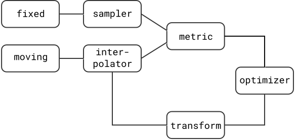
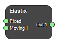
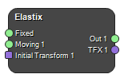
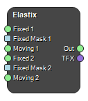
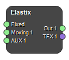

{kind=link}
Image registration with Elastix
Image registration is an important part of medical image analysis, to align images taken with different modalities or at different times. The mathematical basis for image registration will not be covered in this article, which will focus on the practical aspects of image registration using elastix in MICE. If you want to know more about the mathematical foundation of image registration, please look in the excellent manual available at the elastix homepage. Some background on the image registration process is however necessary to review.
The image registration process
The basic image registration problem is based on two images, the fixed image and the moving image. The two images are defined in their own spatial domain, i.e. have their own coordinate systems, and the registration processes aims to find the displacement that spatially aligns the moving image to the fixed image. This is done by displacing the moving image using some transform, spatially mapping a point from the fixed image to the moving image and comparing the information in the two images at that point using some metric. By trying many different displacements using an optimizer, ideally the best alignment between the two images can be found, as illustrated below. In the following sections, the elastix parameter name highlighted as code.

Registration components
Metrics
There are several similarity measures available in elastix, listed below with some pointers on their applicability:
- Mean squared difference (MSD):
(AdvancedMeanSquares)This measure is simple, but only suitable for images with equal intensity distribution, i.e. mono-modal images. - Normalised correlation coefficient (NCC):
(AdvancedNormalizedCorrelation)The images to be registered must have a linear relationship between their intensity values, and is therefore less strict than MSD and can be used more often. - Mutual information (MI):
(AdvancedMattesMutualInformation)There must only be a relationship between the probability distributions of the intensity values, and is therefore more general than both MSD and NCC. It is the workhorse of image registration, and works well for both multi- and mono-modal image pairs. This is also the metric that works best in elastix performance wise. - Normalized mutual information (NMI):
(NormalizedMutualInformation)Similar to MI – there have been indications of better performance than MI in some cases. - Kappa statistic (KS):
(AdvancedKappaStatistic)Specific to registrations of binary images – measures overlap of segmentations.
Transforms
There are many transforms available in elastix with different degrees of freedom.
- Translation:
(TranslationTransform)The moving image can only be translated to match the fixed image. - Rigid:
(EulerTransform)The moving image can be translated and rotated to match the fixed image. - Similarity:
(SimilarityTransform)The moving image can be translated, rotated and scaled isotropically. This is a quite uncommon transform. - Affine:
(AffineTransform)The moving image can be translated, rotated, scaled and sheared. - B-splines:
(BSplineTransform)A non-rigid transform which can model local deformations. The scale of the deformations is largely controlled by the control point spacing.
Optimisers
There are several different optimizers available in elastix - the most used ones are gradient descent (GD), Robbins-Monro (RM) and adaptive stochastic gradient descent (ASGD) (AdaptiveStochasticGradientDescent). The RM optimizer approximates the calculation of the derivative, making it faster to calculate, and is the recommended over GD in elastix. ASGD requires less parameters to be set and tends to be more robust than GD, and can be used as a default optimizer since it works well in most applications. There are many more optimizers available as well - we refer to the elastix manual for details on these.
Other components
There are other components necessary in the image registration scheme, such as the image sampler, interpolator and multi-resolution scheme.
The image sampler defines the way the evaluated points are selected. In general, all of the points in the fixed image need not be evaluated in order to accomplish a good registration, a subset may suffice. The available choices are
- Full:
(Full)The full sampler evaluates all point in the fixed image. - Grid:
(Grid)The grid sampler defines a regular grid on the fixed image with grid size defined by the user, effectively downsampling the image. - Random:
(Random)The random sampler randomly selects a user specified number of voxels from the fixed image. Every voxel has equal chance to be selected, and the same voxel can be selected several times. - Random coordinate:
(RandomCoordinate)Similar to the random sampler, but is not limited to voxel positions, i.e. points in between voxels can also be selected. The voxel values at these position must be obtained by interpolation.
The interpolator is necessary since the optimization is evaluated at non-voxel positions (the moving image moves, rotates and deforms in physical space). There are several methods available with different quality and speed. The available interpolators are
- Nearest neighbour:
(NearestNeighborInterpolator)Fast but course - the intensity of the voxel nearest in space is returned. - Linear:
(LinearInterpolator)The average of the nearest voxels, weighted by the distance to each voxels. This option usually gives good results during registration. - N-th order B-spline:
(BSplineInterpolator)The higher order, the better quality but requiring more computation time.
The multi-resolution scheme is a way to increase the chance of successful registrations by starting the process with images of lower complexity. This is accomplished using image pyramids which can be smoothed, downsampled, or both, increasing the complexity (i.e. reducing the amount or smoothing and/or downsampling) as the registration process converges. This parameter should be specified for both the fixed and moving image as (Fixed______ImagePyramid) and (Moving______ImagePyramid) where the blank space indicates what kind of method is used. In elastix, the available choices are (parameters only given for the fixed image):
- Gaussian pyramid:
(FixedRecursiveImagePyramid)Applies both smoothing and downsampling. - Gaussian scale space:
(FixedSmoothingImagePyramid)Applies only smoothing. - Shrinking pyramid:
(FixedShrinkingImagePyramid)Applies only downsampling.
The elastix parameter file
The registration components and their parameter values are defined in the elastix parameter file. The syntax is simple and is supplied as follows:
(ParameterName "value(s)")
Below, a parameter file is supplied which specifies a 2D rigid registration without comments. The full parameter file with comments can be found here. Note that this is just one example - e.g. some parameters regarding the transform are only valid for the transform that is selected, so the parameter file can vary extensively. It is divided in sections. The first section defines the main settings of the registration - the most important setting for a MICE/elastix user is the image dimension settings, which must be changed between 2D and 3D depending on the application.
// Main settings
(FixedInternalImagePixelType "float")
(MovingInternalImagePixelType "float")
(FixedImageDimension 2)
(MovingImageDimension 2)
(UseDirectionCosines "true")
The second section defines the main components of the registration, many of which have been described in the above sections. Two of the components were not mentioned - the registration component connects all other components and implements the multi resolution aspect of the registration. It can also handle multi-metric registrations, which will be further described below in the examples. Also the re-sampler was not mentioned - it defines how to re-sample the final result. Is normally left unchanged.
// **************** Main Components **************************
(Registration "MultiResolutionRegistration")
(Interpolator "BSplineInterpolator")
(ResampleInterpolator "FinalBSplineInterpolator")
(Resampler "DefaultResampler")
(FixedImagePyramid "FixedRecursiveImagePyramid")
(MovingImagePyramid "MovingRecursiveImagePyramid")
(Optimizer "AdaptiveStochasticGradientDescent")
(Transform "EulerTransform")
(Metric "AdvancedMattesMutualInformation")
The following section defines parameters pertaining to the transform - how to scale, combine and initialize them.
// ***************** Transformation **************************
(AutomaticScalesEstimation "true")
(AutomaticTransformInitialization "true")
(HowToCombineTransforms "Compose")
This section specifies parameters regarding the metric.
// ******************* Similarity measure *********************
(NumberOfHistogramBins 32)
(ErodeMask "false")
Next, details regarding the multi-resolution scheme.
// ******************** Multiresolution **********************
(NumberOfResolutions 4)
(ImagePyramidSchedule 8 8 4 4 2 2 1 1 )
Details regarding the optimizer.
// ******************* Optimizer ****************************
(MaximumNumberOfIterations 250)
This section defines how the image sampling should be done.
// **************** Image sampling **********************
(NumberOfSpatialSamples 2048)
(NewSamplesEveryIteration "true")
(ImageSampler "Random")
Finally, there is a section regarding details on how the interpolation and final re-sampling of the result should be done.
// ************* Interpolation and Re-sampling ****************
(BSplineInterpolationOrder 1)
(FinalBSplineInterpolationOrder 3)
(DefaultPixelValue 0)
(WriteResultImage "true")
(ResultImagePixelType "short")
(ResultImageFormat "mhd")
There is detailed documentation on the available parameters on the elastix homepage, as well as several parameter file examples with references to literature, see below. In MICE, in the parameter file editor which you can access from the node settings panel or by double-clicking on the node itself in the Process pane, you can find some default parameter files in the PRESETS menu.
Examples in MICE
Elastix is normally called via a command-line interpreter, using commands like this:
elastix -f fixedImage.ext -m movingImage.ext -out outputDirectory -p parameterFile.txt
MICE works like a wrapper to elastix, so you can use it in a graphical user interface. In the following section, examples are provided to demonstrate how to set up the elastix node in MICE to solve different registration tasks. To study the parameter file and node settings, open the example workflows.
Rigid registration in 3D
This is the simplest case, and it's only using the default settings of Elastix in MICE. Just connect the fixed and moving images and run the process. The parameter file is called Default rigid.

Affine registration
This example shows how to make an affine registration in 3D. The parameter file is called Default affine. The node looks exactly the same as in the rigid example, but the parameters are different.
Basic non-rigid registration in 3D
This example shows how to make a basic non-rigid registration in 3D. Use the parameter-file Default non-rigid. The node has an extra input, Initial transform, which contains the initial rigid registration. You can either register the output image from the rigid registration without an initial transform, or the original moving image with an initial transform. It also has an extra output TFX1 which contains the transform parameters. This can be used to produce vector fields to analyze the deformation, apply it to other images, etc.

Non-rigid registration with guiding structures in 2D
This example is a little more involved than the previous ones. It is a deformable registration that simultaneously takes into account the image information create a global registration, as well as some guiding structures to guide the registration in a smaller section of the images. To create such a registration, you need to select Use Multiple Fixed Images and Multi Metric in the Node Settings pane. This will create inputs for two image pairs which will be registered simultaneously - note that this type of registration will register the images together, i.e. both image pairs will contribute to the loss function, but they will have the same transform. You will also need to toggle the 2D/2D Registration switch in the Node Settings pane. There are also some special parameter settings:
(FixedImageDimension 2)
(MovingImageDimension 2)
(Registration "MultiMetricMultiResolutionRegistration")
(Interpolator "LinearInterpolator" "LinearInterpolator")
(ImageSampler "RandomCoordinate" "RandomCoordinate")
(FixedImagePyramid "FixedSmoothingImagePyramid" "FixedSmoothingImagePyramid")
(MovingImagePyramid "MovingSmoothingImagePyramid" "MovingSmoothingImagePyramid")
(Metric "AdvancedMattesMutualInformation" "AdvancedMeanSquares")
(Metric0Weight 0.3)
(Metric1Weight 0.7)
Several parameters need to be specified twice, as there are two simultaneous registrations running. In this registration, we also employ Fixed Masks. These are binary masks, specified in the fixed image space, which defines in what areas the image should be sampled. By using these, you can focus the registration on certain parts of the image.

Partially rigid deformable registration in 2D
This example shows how to use auxiliary images to guide the registration, here using an image specifying the rigidity of the image. Where the auxiliary image is 0, the moving image is deformable and where it is 1, the moving image is rigid. To use this type of registration, set the desired number of Auxiliary images to 1 in the Node Settings panel. There are some specific settings in the parameter file:
(Registration "MultiMetricMultiResolutionRegistration")
(Metric "AdvancedMattesMutualInformation" "TransformBendingEnergyPenalty" "TransformRigidityPenalty")
(Metric0Weight 0.9)
(Metric1Weight 0.1)
(Metric2Weight 0.1 0.1 0.1 4)
(MovingRigidityImageName AUX1)
(DilateRigidityImages "false")
In this example, we change the metric weights depending on where in the multi-resolution scheme we are. In the final resolution, the rigidity penalty is dominant. Note that you call the auxiliary image using AUX1. For details regarding the use of partially rigid registrations and the specific parameters which can be user, we refer to the elastix homepage and the paper by Staring, Klein and Pluim.

Copyright © 2022, NONPI Medical AB